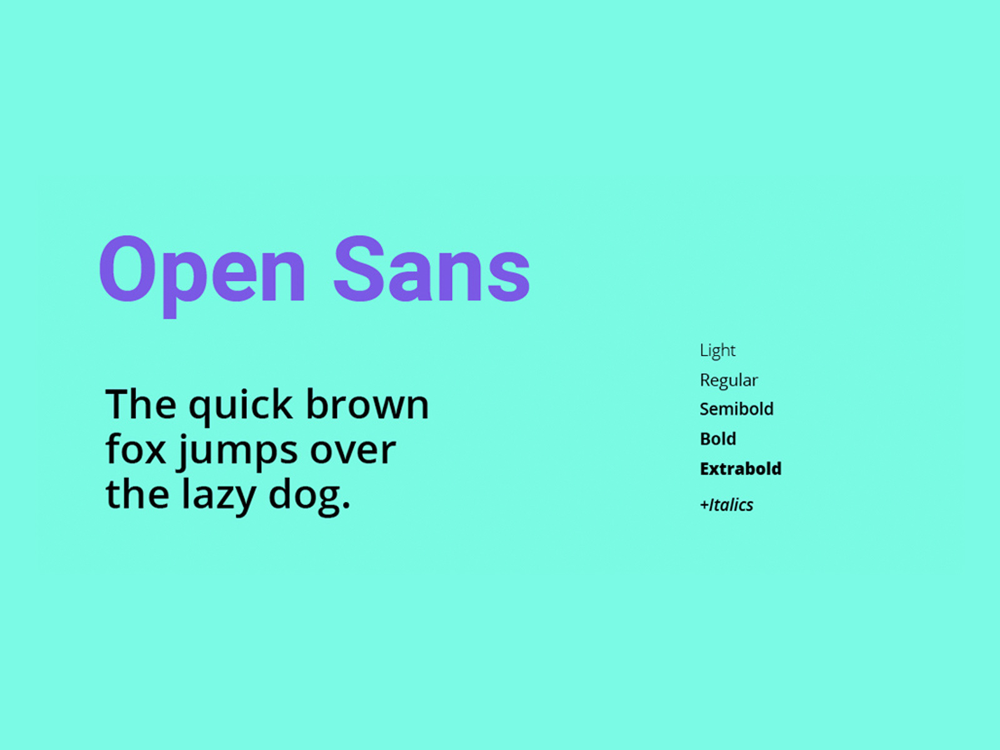
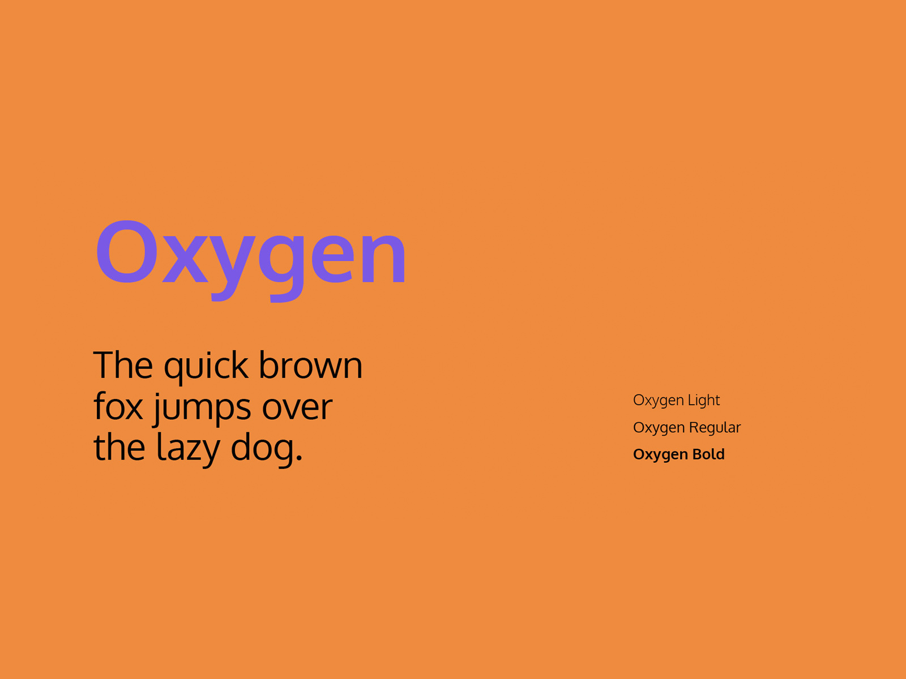
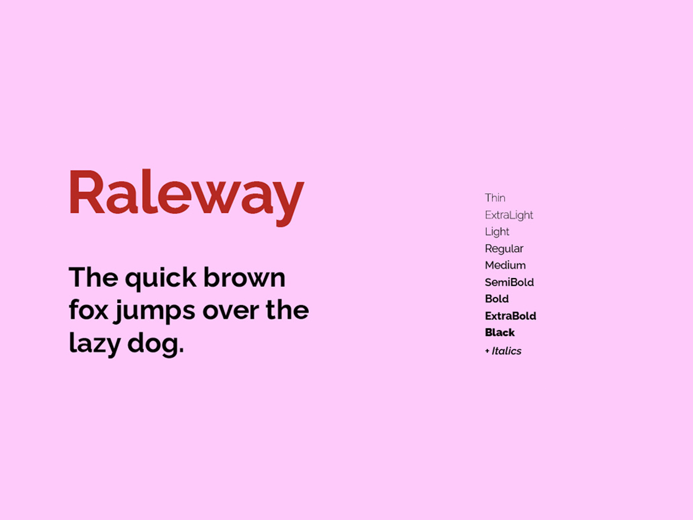
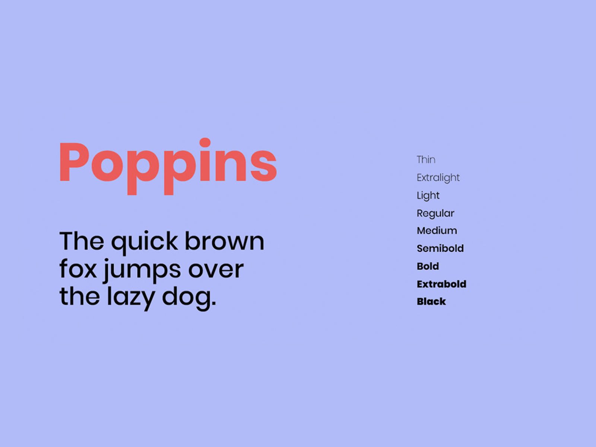
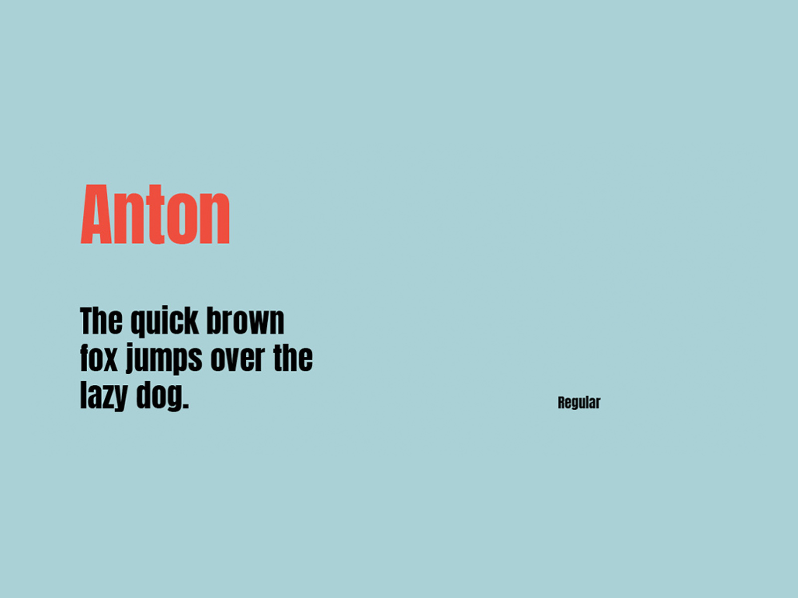
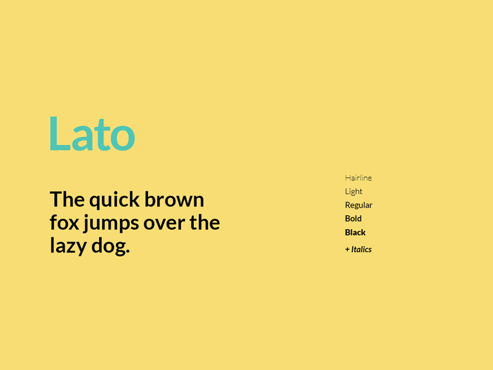

CSS font-size : A Definitive Font-Sizing Guide
Font sizing in CSS sounds as though it should be easy. Until you try
it. Many developers use the force; they tinker with the CSS font-size
property until it looks right only to find it’s different in another
browser. A little understanding can go a long way…
The font-size Property
The font-size property can be set for any HTML tag (even if it would
not normally contain textual content like br). It can be assigned a
variety of absolute, relative, or length size parameters. An element
will inherit the font-size of its parent unless you override it. This
is especially important when you specify relative sizes.
Absolute Font Sizing Keywords
Several absolute font-sizing keywords are available. The font size is
determined from a browser preset and the element will not inherit its
parent’s size.
- font-size: xx-small;
- font-size: x-small;
- font-size: small;
- font-size: medium;
- font-size: large;
- font-size: x-large;
- font-size: xx-large;
Although most browsers support these keywords, the exact sizes will
differ. They are a fairly crude method of font sizing and are generally
avoided by most developers.
Absolute Font Sizing Keywords
Two relative font-sizing keywords are available. The font is sized
according to its parent element:
font-size: smaller; font-size: larger; For example, if the parent has
a font size of ‘medium’, a value of ‘larger’ will set the element to
‘large’. Other font units are normally altered by a factor of around
1.2 but, again, there is no standard and browser results will differ.
Absolute Lengths
The font-size property can be assigned an absolute length:
- mm : millimeters, e.g. 10mm.
- cm : centimeters, e.g. 1cm ( = 10mm).
- in : inches, e.g. 0.39in ( ~= 10mm).
-
pt : point, where 1pt is generally assumed to be 1/72 inch e.g.
12pt.
- pc : pica, where 1pc is 12pt.
- px : pixel, e.g. 14px.
In general, there are issues with all these measurement units.
Millimeters, centimeters and inches are inaccurate for a screen-based
medium. Points and picas are unreliable since systems can use different
dpi settings. Pixel appears to be the most suitable, but it can lead to
accessibility issues because the text cannot be resized in IE.
Relative Lengths
The font-size property can be assigned a unit that it relative to its
parent’s font size:
-
em : 1em is equivalent to the current font size, so 2em is twice as
large.
-
% : 100% is equivalent to the current font size, so 200% is twice as
large.
-
ex : 1ex is equivalent to the height of the letter ‘x’ in the
current font.
Few developers use ‘ex’, but it can be useful in some situations where
you need fine-grained font sizes, e.g. 1ex rather than 0.525em.
Percentage and ’em’ sizes are equivalent, e.g. 50% = 0.5em, 100% =
1em, 120% = 1.2em, etc. Some browsers exhibit subtle differences but
it’s rarely a major problem. If you want to save every byte, you could
choose the shortest definition, i.e. 50% is shorter than 0.5em and 1em
is shorter than 100%.
Source
20 Best Google Web Fonts
Top recommended Google Web Fonts Here you can find a selection of fonts
we’ve chosen, in part due to their aesthetic qualities, but above all,
their functionality. As well as families with many styles and weights,
you’ll find fonts that are optimized for interfaces, UI Optimized web
fonts, and others that are especially legible in paragraphs, or
particularly comfortable for reading on mobile and legible on any device
- be it smartphone, desktop or tablet. To discover more examples of free
fonts, take a look at our collection of Free Fonts, containing a wide
variety of free typefaces.
Open Sans - Google Font by Google Fonts

Oxygen - Google Font by Google Fonts

Raleway - Google Font by Google Fonts

Poppins - Google Font by Google Fonts

Anton - Google Font by Google Fonts

Lato - Google Font by Google Fonts

More detail